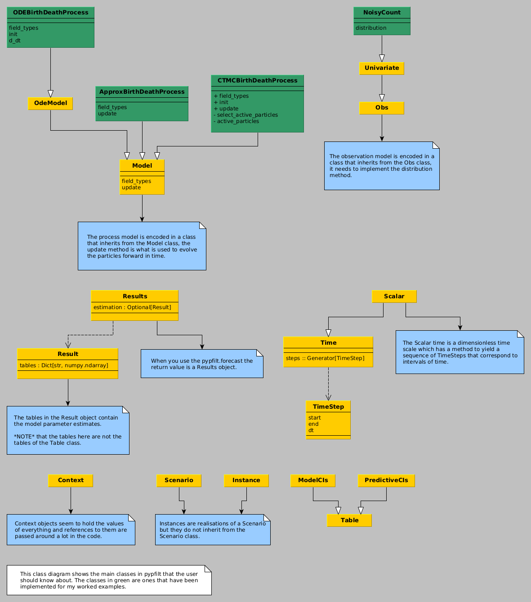
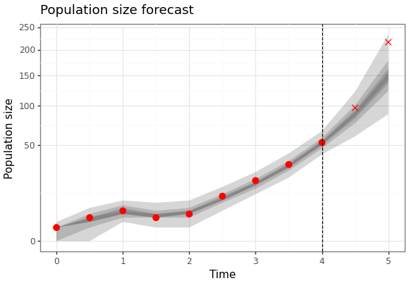
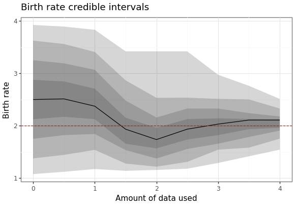

pypfilt-notes
Table of Contents
Pypfilt

Figure 1: A class diagram showing the main classes that a user will interact with when using pypfilt along with the classes that are used in the examples on this page.
Terminology
- observation model
- the distribution of a random variable (e.g., the measured population size) given the state (e.g., the true population.)
- process model
- a stochastic process for the state, e.g., how the population size changes through time.
- scenario
- a description of a simulation or an inference problem, e.g., estimating the birth rate and the future population sizes. Think: "an imagined sequence of events."
Examples: birth-death process
We can model the birth-death process in a number of ways:
- with Tau-leaping;
- with ODEs;
- and as a CTMC.
For each example, we will consider observations with Poisson noise about the true state. The observation model is described with the NoisyCount observation distribution.
Observation model
As stated above, we will assume Poisson noise about the true value of
the state. This is implemented as the NoisyCount class. This class
will be used with each of the different process representations.
# NoisyCount.py <<imports>> class NoisyCount(pypfilt.obs.Univariate): def distribution(self, ctx, snapshot): expected_value = snapshot.state_vec['x'] return scipy.stats.poisson(mu=expected_value)
Tau-leaping birth-death
Consider an approximation of the birth-death process using \(\tau\)-leaping. The following example demonstrates how to simulate from this process and run a forecast to estimate both the future state and the birth rate (assuming a known death rate and initial condition).
Process model
We start by defining a model for this process using \(\tau\)-leaping.
# TauLeapBirthDeathProcess.py <<imports>> class TauLeapBirthDeathProcess(pypfilt.model.Model): def field_types(self, ctx): return [('birth', np.dtype(float)), ('death', np.dtype(float)), ('x', np.dtype(int))] def update(self, ctx, time_step, is_fs, prev, curr): """Destructively update the current state.""" rnd = ctx.component['random']['model'] net_rate = (prev['birth'] - prev['death']) * time_step.dt * prev['x'] curr['birth'] = prev['birth'] curr['death'] = prev['death'] curr['x'] = prev['x'] + rnd.poisson(lam=net_rate, size=curr['x'].shape)
Note that in the update method we need to destructively update
curr to contain the new value. I.e., curr should be considered a
reference to the state, this avoids needing to make a copy of this
data.
Scenario file
The simulation and estimation computations are specified with a TOML
file approx-bd-example.toml.
[metadata] name = "Tau leap birth-death example" filename = "tau-leap-bd-example.toml" author = "Alexander E. Zarebski" date = "2023-07-25" [components] model = "TauLeapBirthDeathProcess.TauLeapBirthDeathProcess" time = "pypfilt.Scalar" sampler = "pypfilt.sampler.LatinHypercube" summary = "pypfilt.summary.HDF5" [time] start = 0.0 until = 5.0 steps_per_unit = 10 summaries_per_unit = 2 [prior] death = { name = "constant", args.value = 1.0 } x = { name = "constant", args.value = 1 } [observations.x] model = "NoisyCount.NoisyCount" file = "tau-leap-bd-example-x.ssv" [filter] particles = 10000 prng_seed = 42 history_window = -1 resample.threshold = 0.25 regularisation.enabled = true [scenario.simulate] prior.birth = { name = "constant", args.value = 2.0 } [scenario.forecast] summary.tables.model_cints.component = "pypfilt.summary.ModelCIs" summary.tables.model_cints.credible_intervals = [ 0, 25, 50, 75, 95 ] summary.tables.forecasts.component = "pypfilt.summary.PredictiveCIs" summary.tables.forecasts.credible_intervals = [10, 20, 40, 80] prior.birth = { name = "uniform", args.loc = 1.0, args.scale = 3.0 } backcast_time = 0.0 forecast_time = 4.0 [output] credible_intervals = "demo-tau-leap-bd-cris.ssv" estimate_plot = "tau-leap-bd-posterior-estimates.png" forecast_plot = "tau-leap-bd-posterior-forecasts.png"
Note, apart from scenario.simulate and scenario.forecast, all the
configuration is shared between the two tasks. The process model and
observation model needs to be described with both the module and the
class within it.
The specification of the prior distributions appears to take the location as the right end of the uniform distribution and the scale is the width of the uniform distribution. This may not be wildly intuitive, but bear in mind that there are sophisticated options for specifying a prior distribution available.
Main script
Here is the main script that runs the simulation and estimation.
# tau-leap-bd-example.py <<imports>> <<plotting-imports>> scenario_file = 'tau-leap-bd-example.toml' instances = list(pypfilt.load_instances(scenario_file)) sim_instance = instances[0] my_time_scale = sim_instance.time_scale() my_obs_tables = pypfilt.simulate_from_model(sim_instance) for (obs_unit, obs_table) in my_obs_tables.items(): out_file = f'tau-leap-bd-example-{obs_unit}.ssv' pypfilt.io.write_table(out_file, obs_table, my_time_scale)
To run the forecasts on the simulated data we have the following
fst_instance = instances[1] backcast_time = fst_instance.settings['backcast_time'] forecast_time = fst_instance.settings['forecast_time'] context = fst_instance.build_context() results = pypfilt.forecast(context, [forecast_time], filename=None)
We can generate a plot of the forecast values, and the estimate of the historical states of the process.
fit = results.estimation.tables['forecasts'] forecast = results.forecasts[forecast_time].tables['forecasts'] credible_intervals = np.concatenate(( fit[fit['time'] >= backcast_time], forecast)) cri_df = pd.DataFrame(credible_intervals) cri_df = cri_df.assign(prob = cri_df['prob']) obs_df = pd.read_csv('tau-leap-bd-example-x.ssv', sep=' ') obs_df = obs_df[obs_df['time'] >= backcast_time] obs_df = obs_df.assign(observed = obs_df['time'] <= forecast_time) fs_p9 = (ggplot() + geom_ribbon(data = cri_df, mapping = aes(x = "time", ymin = "ymin", ymax = "ymax", group = "prob"), alpha = 0.2) + scale_x_continuous(name = "Time") + scale_y_sqrt(name = "Population size") + geom_point(data = obs_df, mapping = aes(x = "time", y = "value", shape = "observed"), size = 3, colour = "red") + scale_shape_manual(values = {True: 'o', False: 'x'}) + geom_vline(xintercept = forecast_time, linetype = "dashed") + labs(title = "Population size forecast") + theme_bw() + theme(legend_position = "none")) fs_p9.save(instances[1].settings['output']['forecast_plot'], height = 4.1, width = 5.8)
Here are the results of the particle filter.

Figure 2: Forecast of birth-death process
We can also generate a plot of how the posterior distribution converges on the true value of the parameter as the amount of data available increases.
param_cris_df = pd.DataFrame(results.estimation.tables['model_cints']) param_cris_df = param_cris_df[param_cris_df['name'] == 'birth'] param_cris_df['prob'] = pd.Categorical( param_cris_df['prob'], categories=param_cris_df['prob'].unique(), ordered=True ) pt_est_mask = param_cris_df['prob'] == 0 br_p9 = (ggplot() + geom_ribbon(data = param_cris_df, mapping = aes(x = "time", ymin = "ymin", ymax = "ymax", group = "prob"), alpha = 0.2, size = 1) + geom_line(data = param_cris_df[pt_est_mask], mapping = aes(x = "time", y = "ymin")) + geom_hline(yintercept = 2.0, linetype = "dashed", colour = "red") + scale_x_continuous(name = "Amount of data used") + scale_y_continuous(name = "Birth rate") + labs(title = "Birth rate credible intervals") + theme_bw()) br_p9.save(instances[1].settings['output']['estimate_plot'], height = 4.1, width = 5.8)
Here are the results of the particle filter.
Figure 3: Forecast of birth-death process
ODE birth-death
Consider an approximation of the birth-death process using a differential equation.
Process model
We start by defining a model for this process which is adapted from this example.
# ODEBirthDeathProcess.py <<imports>> class ODEBirthDeathProcess(pypfilt.model.OdeModel): def field_types(self, ctx): return [('birth', np.dtype(float)), ('death', np.dtype(float)), ('x', np.dtype(float))] def init(self, ctx, vec): prior = ctx.data['prior'] vec['x'] = prior['x'] vec['birth'] = prior['birth'] vec['death'] = prior['death'] self.method = 'RK45' def d_dt(self, time, xt, ctx, is_forecast): d_dt = np.zeros(xt.shape, dtype=xt.dtype) d_dt['x'] = (xt['birth'] - xt['death']) * xt['x'] return d_dt
Scenario file
The simulation and estimation computations are specified with a TOML
file ode-bd-example.toml.
[metadata] name = "ODE birth-death example" filename = "ode-bd-example.toml" author = "Alexander E. Zarebski" date = "2023-07-27" [components] model = "ODEBirthDeathProcess.ODEBirthDeathProcess" time = "pypfilt.Scalar" sampler = "pypfilt.sampler.LatinHypercube" summary = "pypfilt.summary.HDF5" [time] start = 0.0 until = 5.0 steps_per_unit = 10 summaries_per_unit = 2 [prior] death = { name = "constant", args.value = 1.0 } x = { name = "constant", args.value = 1 } [observations.x] model = "NoisyCount.NoisyCount" file = "ode-bd-example-x.ssv" [filter] particles = 10000 prng_seed = 13 history_window = -1 resample.threshold = 0.25 regularisation.enabled = true [scenario.simulate] prior.birth = { name = "constant", args.value = 2.0 } [scenario.forecast] summary.tables.model_cints.component = "pypfilt.summary.ModelCIs" summary.tables.model_cints.credible_intervals = [ 0, 25, 50, 75, 95 ] summary.tables.forecasts.component = "pypfilt.summary.PredictiveCIs" summary.tables.forecasts.credible_intervals = [10, 20, 40, 80] prior.birth = { name = "uniform", args.loc = 1.75, args.scale = 0.5 } backcast_time = 2.0 forecast_time = 4.0 [output] credible_intervals = "demo-ode-bd-cris.ssv" estimate_plot = "ode-bd-posterior-estimates.png" forecast_plot = "ode-bd-posterior-forecasts.png"
Main script
Here is the main script that runs the simulation and estimation.
# ode-bd-example.py <<imports>> <<plotting-imports>> scenario_file = 'ode-bd-example.toml' instances = list(pypfilt.load_instances(scenario_file)) sim_instance = instances[0] my_time_scale = sim_instance.time_scale() my_obs_tables = pypfilt.simulate_from_model(sim_instance) for (obs_unit, obs_table) in my_obs_tables.items(): out_file = f'ode-bd-example-{obs_unit}.ssv' pypfilt.io.write_table(out_file, obs_table, my_time_scale)
To run the forecasts on the simulated data we have the following
fst_instance = instances[1] backcast_time = fst_instance.settings['backcast_time'] forecast_time = fst_instance.settings['forecast_time'] context = fst_instance.build_context() results = pypfilt.forecast(context, [forecast_time], filename=None)
Then finally we can generate a plot showing both the future forecasted values, but also the estiamte of the historical states of the process.
fit = results.estimation.tables['forecasts'] forecast = results.forecasts[forecast_time].tables['forecasts'] credible_intervals = np.concatenate(( fit[fit['time'] >= backcast_time], forecast)) cri_df = pd.DataFrame(credible_intervals) cri_df = cri_df.assign(prob = cri_df['prob']) obs_df = pd.read_csv('ode-bd-example-x.ssv', sep=' ') obs_df = obs_df[obs_df['time'] >= backcast_time] obs_df = obs_df.assign(observed = obs_df['time'] <= forecast_time) fs_p9 = (ggplot() + geom_ribbon(data = cri_df, mapping = aes(x = "time", ymin = "ymin", ymax = "ymax", group = "prob", fill = "prob"), alpha = 0.5) + scale_fill_gradient(low = "white", high = "black") + scale_x_continuous(name = "Time") + scale_y_continuous(name = "Population size") + geom_point(data = obs_df, color = "red", mapping = aes(x = "time", y = "value", shape = "observed"), size = 3) + scale_shape_manual(values = {True: 'o', False: 'x'}) + geom_vline(xintercept = forecast_time, linetype = "dashed") + labs(title = "Population size forecast") + theme_bw() + theme(legend_position = "none")) png_plot_fn = instances[1].settings['output']['forecast_plot'] pdf_plot_fn = png_plot_fn.replace("png", "pdf") p9.save_as_pdf_pages([fs_p9], filename = pdf_plot_fn) import os os.system(f"convert -density 300 {pdf_plot_fn} {png_plot_fn}") os.remove(pdf_plot_fn)
Here are the results of the particle filter (with the code to create the figure below).

Figure 4: Forecast of birth-death process
We can also generate a plot of how the posterior distribution converges on the true value of the parameter as the amount of data available increases.
param_cris_df = pd.DataFrame(results.estimation.tables['model_cints']) param_cris_df = param_cris_df[param_cris_df['name'] == 'birth'] param_cris_df['prob'] = pd.Categorical( param_cris_df['prob'], categories=param_cris_df['prob'].unique(), ordered=True ) pt_est_mask = param_cris_df['prob'] == 0 br_ests_p9 = (ggplot() + geom_ribbon(data = param_cris_df, mapping = aes(x = "time", ymin = "ymin", ymax = "ymax", group = "prob"), alpha = 0.2, size = 1) + geom_line(data = param_cris_df[pt_est_mask], mapping = aes(x = "time", y = "ymin")) + geom_hline(yintercept = 2.0, linetype = "dashed") + scale_x_continuous(name = "Amount of data used") + scale_y_continuous(name = "Birth rate") + labs(title = "Birth rate credible intervals") + theme_bw()) png_plot_fn = instances[1].settings['output']['estimate_plot'] pdf_plot_fn = png_plot_fn.replace("png", "pdf") p9.save_as_pdf_pages([br_ests_p9], filename = pdf_plot_fn) import os os.system(f"convert -density 300 {pdf_plot_fn} {png_plot_fn}") os.remove(pdf_plot_fn)
Here are the results of the particle filter.
Figure 5: Forecast of birth-death process
CTMC birth-death
Consider the birth-death process modelled with a CTMC.
Process model
We start by defining a model for this process which is adapted from this example.
# CTMCBirthDeathProcess.py <<imports>> class CTMCBirthDeathProcess(pypfilt.model.Model): def field_types(self, ctx): return [('birth', np.dtype(float)), ('death', np.dtype(float)), ('x', np.dtype(int)), ('next_event', np.int_), ('next_time', np.float_)] def init(self, ctx, vec): prior = ctx.data['prior'] vec['x'] = prior['x'] vec['birth'] = prior['birth'] vec['death'] = prior['death'] vec['next_time'] = 0 vec['next_event'] = 0 self.select_next_event(ctx, vec, stop_time=0) def update(self, ctx, time_step, is_forecast, prev, curr): curr[:] = prev[:] active = self.active_particles(curr, time_step.end) while any(active): births = np.logical_and(active, curr['next_event'] == 0) curr['x'][births] += 1 deaths = np.logical_and(active, curr['next_event'] == 1) curr['x'][deaths] -= 1 self.select_next_event(ctx, curr, stop_time=time_step.end) active = self.active_particles(curr, time_step.end) def active_particles(self, vec, stop_time): return np.logical_and( vec['next_time'] <= stop_time, vec['x'] > 0, ) def select_next_event(self, ctx, vec, stop_time): active = self.active_particles(vec, stop_time) if not any(active): return x = vec['x'][active] birth = vec['birth'][active] death = vec['death'][active] birth_rate = birth * x death_rate = death * x rate_sum = birth_rate + death_rate rng = ctx.component['random']['model'] dt = - np.log(rng.random(x.shape)) / rate_sum vec['next_time'][active] += dt threshold = rng.random(x.shape) * rate_sum death_event = threshold > birth_rate vec['next_event'][active] = death_event.astype(np.int_) def can_smooth(self): return {'birth'}
Scenario file
The simulation and estimation computations are specified with a TOML
file ctmc-bd-example.toml.
[metadata] name = "CTMC birth-death example" filename = "ctmc-bd-example.toml" author = "Alexander E. Zarebski" date = "2023-07-27" [components] model = "CTMCBirthDeathProcess.CTMCBirthDeathProcess" time = "pypfilt.Scalar" sampler = "pypfilt.sampler.LatinHypercube" summary = "pypfilt.summary.HDF5" [time] start = 0.0 until = 5.0 steps_per_unit = 10 summaries_per_unit = 2 [prior] death = { name = "constant", args.value = 1.0 } x = { name = "constant", args.value = 1 } [observations.x] model = "NoisyCount.NoisyCount" file = "ctmc-bd-example-x.ssv" [filter] particles = 1000 prng_seed = 1 history_window = -1 resample.threshold = 0.25 regularisation.enabled = true [filter.regularisation.bounds] birth = { min = 1.0, max = 3.0 } [scenario.simulate] prior.birth = { name = "constant", args.value = 2.0 } [scenario.forecast] summary.tables.model_cints.component = "pypfilt.summary.ModelCIs" summary.tables.model_cints.credible_intervals = [ 0, 25, 50, 75, 95 ] summary.tables.forecasts.component = "pypfilt.summary.PredictiveCIs" summary.tables.forecasts.credible_intervals = [10, 20, 40, 80] prior.birth = { name = "uniform", args.loc = 1.0, args.scale = 3.0 } backcast_time = 0.0 forecast_time = 4.0 [output] estimate_plot = "ctmc-bd-posterior-estimates.png" forecast_plot = "ctmc-bd-posterior-forecasts.png"
Main script
Here is the main script that runs the simulation and estimation. Because there is a substantial chance of the process going extinct, we wrap the simulation in a loop, incrementing the seed until we find one that gives an interesting simulation.
# ctmc-bd-example.py <<imports>> <<plotting-imports>> scenario_file = 'ctmc-bd-example.toml' found_good_seed=False seed = 0 while not found_good_seed: print("Trying seed", seed) instances = list(pypfilt.load_instances(scenario_file)) sim_instance = instances[0] sim_instance.settings['filter']['prng_seed'] = seed my_time_scale = sim_instance.time_scale() my_obs_tables = pypfilt.simulate_from_model(sim_instance) found_good_seed = my_obs_tables['x']['value'][-1] > 0 seed += 1 for (obs_unit, obs_table) in my_obs_tables.items(): out_file = f'ctmc-bd-example-{obs_unit}.ssv' pypfilt.io.write_table(out_file, obs_table, my_time_scale)
To run the forecasts on the simulated data we have the following
fst_instance = instances[1] backcast_time = fst_instance.settings['backcast_time'] forecast_time = fst_instance.settings['forecast_time'] context = fst_instance.build_context() results = pypfilt.forecast(context, [forecast_time], filename=None)
Then finally we can generate a plot showing both the future forecasted values, but also the estiamte of the historical states of the process.
fit = results.estimation.tables['forecasts'] forecast = results.forecasts[forecast_time].tables['forecasts'] credible_intervals = np.concatenate(( fit[fit['time'] >= backcast_time], forecast)) cri_df = pd.DataFrame(credible_intervals) cri_df = cri_df.assign(prob = cri_df['prob']) obs_df = pd.read_csv('ctmc-bd-example-x.ssv', sep=' ') obs_df = obs_df[obs_df['time'] >= backcast_time] obs_df = obs_df.assign(observed = obs_df['time'] <= forecast_time) fs_p9 = (ggplot() + geom_ribbon(data = cri_df, mapping = aes(x = "time", ymin = "ymin", ymax = "ymax", group = "prob"), alpha = 0.2) + scale_x_continuous(name = "Time") + scale_y_sqrt(name = "Population size") + geom_point(data = obs_df, mapping = aes(x = "time", y = "value", shape = "observed"), size = 3, colour = "red") + scale_shape_manual(values = {True: 'o', False: 'x'}) + geom_vline(xintercept = forecast_time, linetype = "dashed") + labs(title = "Population size forecast") + theme_bw() + theme(legend_position = "none")) fs_p9.save(instances[1].settings['output']['forecast_plot'], height = 4.1, width = 5.8)
Here are the results of the particle filter (with the code to create the figure below).

Figure 6: Forecast of birth-death process
We can also generate a plot of how the posterior distribution converges on the true value of the parameter as the amount of data available increases.
param_cris_df = pd.DataFrame(results.estimation.tables['model_cints']) param_cris_df = param_cris_df[param_cris_df['name'] == 'birth'] param_cris_df['prob'] = pd.Categorical( param_cris_df['prob'], categories=param_cris_df['prob'].unique(), ordered=True ) pt_est_mask = param_cris_df['prob'] == 0 br_p9 = (ggplot() + geom_ribbon(data = param_cris_df, mapping = aes(x = "time", ymin = "ymin", ymax = "ymax", group = "prob"), alpha = 0.2, size = 1) + geom_line(data = param_cris_df[pt_est_mask], mapping = aes(x = "time", y = "ymin")) + geom_hline(yintercept = 2.0, linetype = "dashed", colour = "red") + scale_x_continuous(name = "Amount of data used") + scale_y_continuous(name = "Birth rate") + labs(title = "Birth rate credible intervals") + theme_bw()) br_p9.save(instances[1].settings['output']['estimate_plot'], height = 4.1, width = 5.8)
Here are the results of the particle filter.

Figure 7: Forecast of birth-death process
Colophon
Here is a requirements file for a python virtual environment to run these examples.
contourpy==1.1.0 cycler==0.11.0 fonttools==4.41.1 h5py==3.9.0 kiwisolver==1.4.4 lhs==0.4.1 matplotlib==3.7.2 mizani==0.9.2 numpy==1.25.1 packaging==23.1 pandas==2.0.3 patsy==0.5.3 Pillow==10.0.0 plotnine==0.12.2 pyparsing==3.0.9 pypfilt==0.8.0 PyQt5==5.15.9 PyQt5-Qt5==5.15.2 PyQt5-sip==12.12.2 python-dateutil==2.8.2 pytz==2023.3 scipy==1.11.1 six==1.16.0 statsmodels==0.14.0 tomli==2.0.1 tomli_w==1.0.0 tzdata==2023.3
Once you have the virtual environment set up, the examples can be run as shown in the following example when using the \(\tau\)-leaping code.
$ python tau-leap-bd-example.py
Here is a source block that gets included whenever you see an imports statement.
import numpy as np import scipy.stats import pypfilt
import matplotlib.pyplot as plt import matplotlib.image as mpimg import matplotlib as matplotlib matplotlib.use('QtAgg') import pandas as pd import plotnine as p9 from plotnine import *